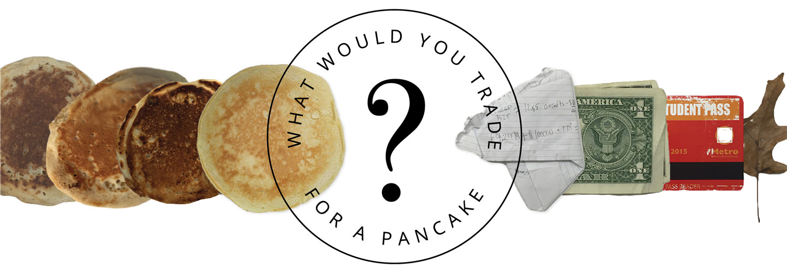
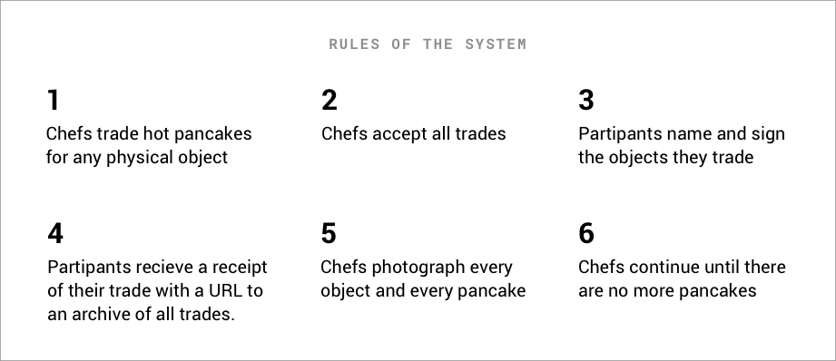
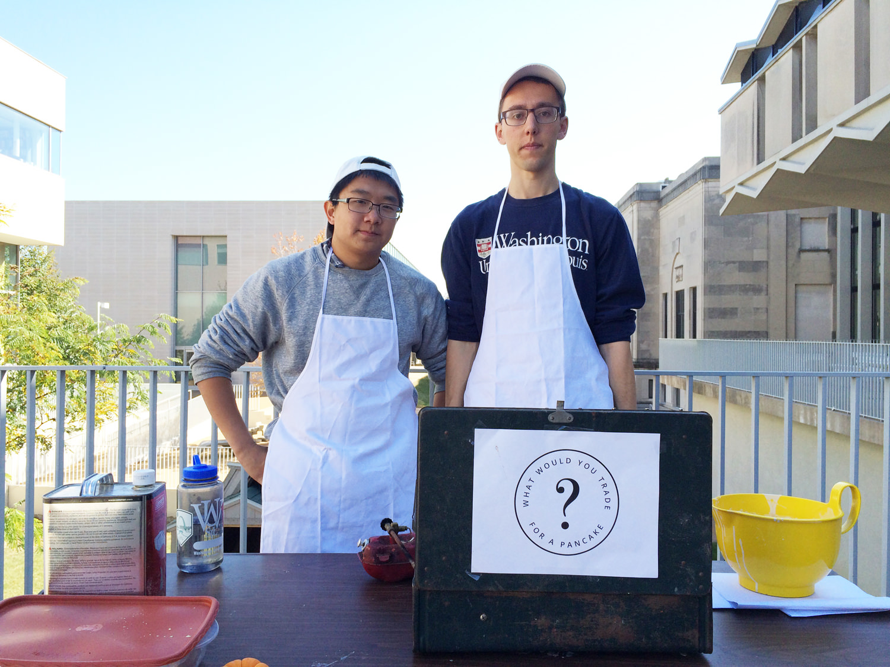
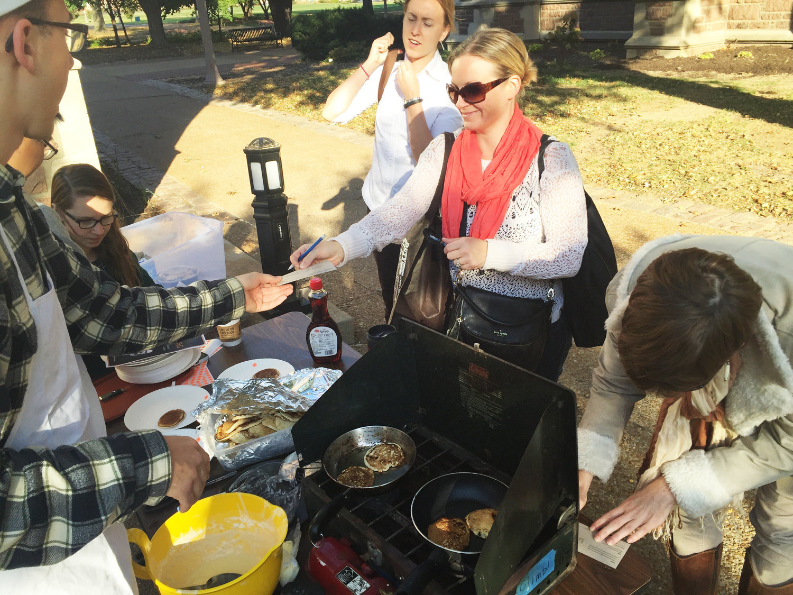
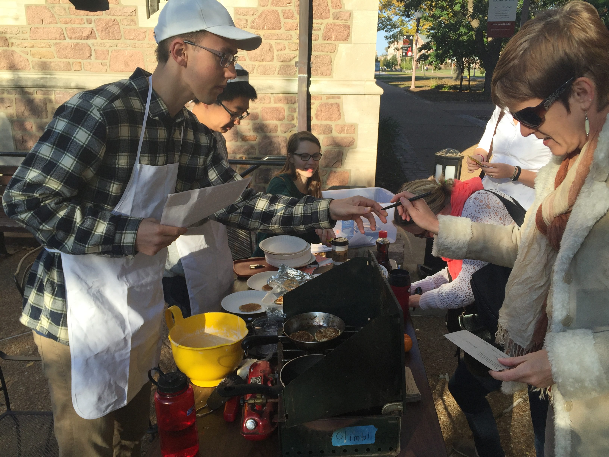
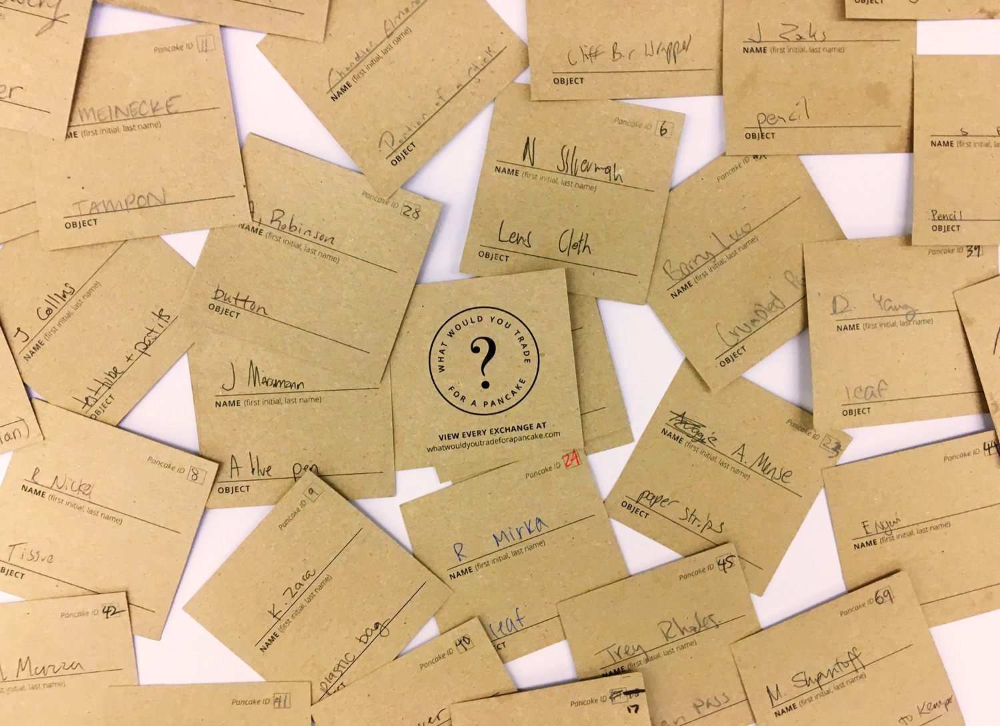
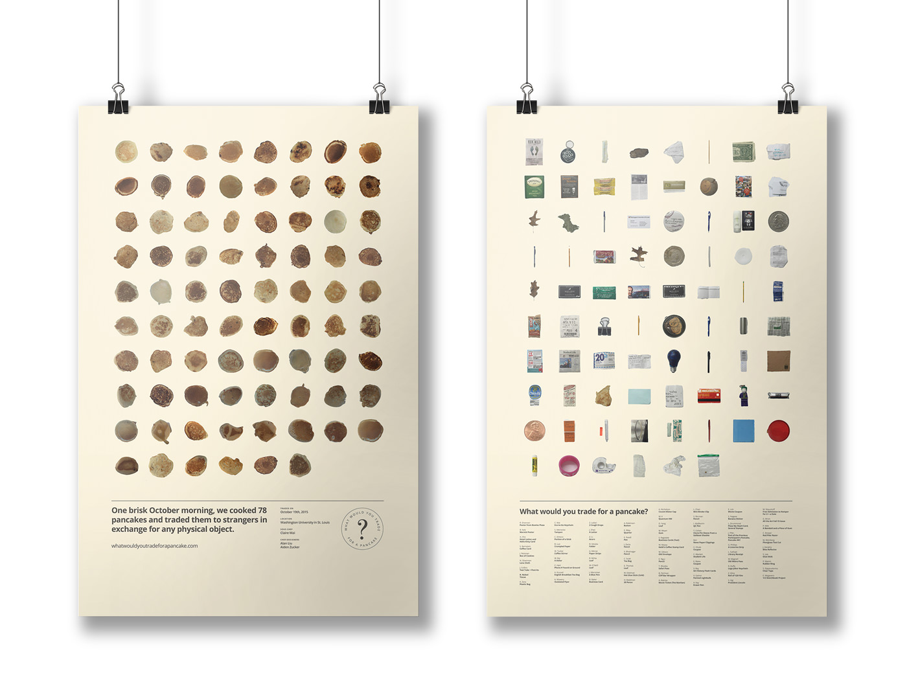
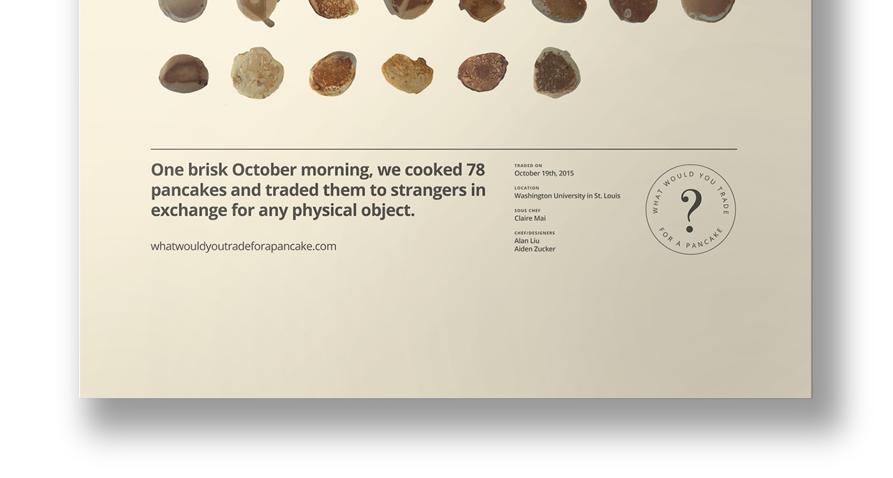
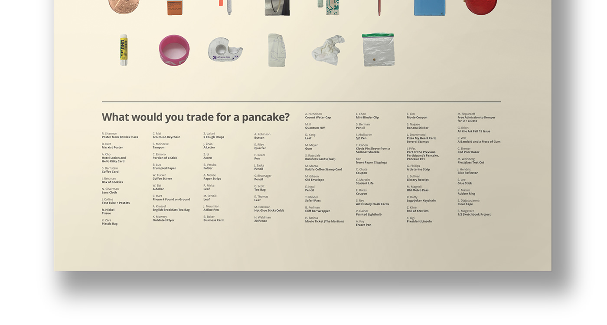

WWYTFAP
2015
A delicious exchange system designed to take people out of their daily routine
How might graphic design be "dematerialised away from the aesthetic to a process”? —Daniel Eatock, Eye Magazine.
Alan Liu and I felt like we spent too much time in studio, so we designed a project that would allow us to go outside, interact with people and take them out of their daily routine. We also wanted to share our love of pancakes with the public. So we made a set of rules:
Alan Liu and I felt like we spent too much time in studio, so we designed a project that would allow us to go outside, interact with people and take them out of their daily routine. We also wanted to share our love of pancakes with the public. So we made a set of rules:





After 78 trades and 3 hours of sorting and photography, I designed a set of posters visualizing the exchanges.



Selected by AIGA for the St. Louis Design Show 21
This project was inspired by Nicolas Bourriaud, Rirkrit Tiravanija, Luna Maurer and Jonathan Hanahan.